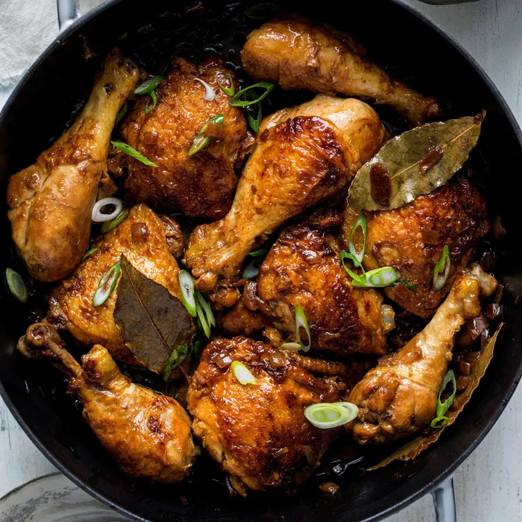

Chicken Adobo

Description
Ingredients
- 2 tablespoons canola oil
- 5 chicken drumsticks (about 1 3/4 pounds)
- 5 bone-in chicken thighs (about 1 3/4 pounds)
- 1 large yellow onion, quartered and sliced 1/4 inch thick
- 8 cloves garlic, smashed
- 5 bay leaves
- ¼ teaspoon whole black peppercorns
- 1 cup cane vinegar (see Tips) or unseasoned rice vinegar
- ⅓ cup reduced-sodium soy sauce
Steps
- Heat oil in a large pot over medium heat until it starts to shimmer. Add drumsticks and cook until brown on all sides, 4 to 6 minutes. Transfer to a plate. Add thighs to the pot and cook until browned, about 3 minutes per side. Transfer to the plate with the drumsticks.
- Add onion, garlic, bay leaves and peppercorns to the pot; cook, stirring occasionally, until the garlic just begins to brown, about 3 minutes. Add vinegar and soy sauce and bring to a simmer, scraping up any browned bits. Return the chicken to the pot and turn to coat with the sauce. Reduce heat to maintain a gentle simmer, cover and cook, stirring occasionally, until the chicken is very tender, about 1 hour.
- Transfer the chicken to a clean plate and cover loosely with foil to keep warm. Bring the sauce to a boil and cook, stirring often, until reduced by about one-third, 3 to 5 minutes. Serve the chicken with the sauce.